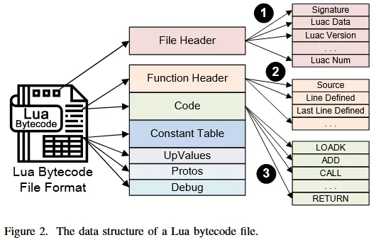
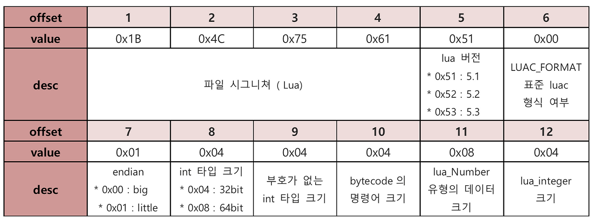
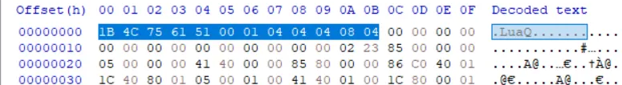

[Research] Custom Lua Script Decompile (EN)
Hello! I’m newp1ayer48, the one in charge of the low-level at Hackyboiz! 🤸🏻♂️

There’s a language frequently used in embedded devices. It’s the Lua script!
Embedded device manufacturers sometimes use customized versions of this Lua script. In such cases, decompiling the compiled Lua script often fails to produce proper results.
So… for my analysis, I decided to improve and patch the decompilation tool myself. Feel free to check out the GitHub for the final patched tool first!
Let’s cover everything from an explanation of Lua Script to how to decompile these custom Lua scripts!
1. Lua Script
Lua is a scripting language developed by a team at the Pontifical Catholic University of Rio de Janeiro (PUC-Rio) in Brazil! (The language of the gods..?) It is known for being small and lightweight, and because it also allows for system control, it’s frequently used in embedded systems and game development. Thanks to its lightweight yet powerful scripting capabilities, it’s also useful for tools that operate at the protocol level, like developing Wireshark plugins or custom dissectors. The official website provides full documentation on installation and the usage of each library and function. Lua has versions from 5.1 to the current 5.4.
Furthermore, it boasts excellent interoperability and extensibility with C/C++. Just like C/C++, Lua can be compiled to build files, which is why you can often find compiled Lua files inside devices or programs. The file extension is .lua for script files and .luac for compiled files. However, compiled files can also exist with a .lua extension, so checking the file header is the most reliable method.
From a security perspective, Lua can be a major vector for vulnerabilities. Functions like os.execute() can be used to execute system commands, making Command Injection a common vulnerability. Memory Corruption and Overflow vulnerabilities also occur in the Stack and Heap, with corresponding CVEs being reported.
1.1. OpenWrt and Luci
OpenWrt is a Linux distribution created for embedded devices, specifically routers. You can install the distribution via the official website, which also provides detailed information on routers built with OpenWrt. It’s an excellent site for gaining knowledge about embedded hacking! When analyzing routers during an embedded hacking project, you’ll frequently come across routers and firmware developed based on the OpenWrt project.
Projects and firmware developed with OpenWrt often use Lua scripts. In particular, they frequently include Luci, which uses a modified Lua script to conveniently configure the web interface. They often use Lua version 5.1, so the Lua files you analyze will typically be version 5.1
2. Lua Decompiler: luadec
It can be difficult to view the source code of a compiled Lua file. In such cases, you can use a Lua decompiler to see the original source code. The most representative decompilers are the C-based luadec and the Java-based unluac. unluac is often praised for its good performance with versions 5.2 and higher. In this article, we will be targeting Lua 5.1 files, so we’ll proceed with decompilation using luadec.
Stock luadec does not have the OpenWrt patches applied, so you need to apply the relevant patches for the decompilation to proceed smoothly. You can install luadec and apply the OpenWrt patch as shown below.
sudo apt-get update
sudo apt-get install libncurses-dev libreadline-dev
git clone https://github.com/viruscamp/luadec
cd luadec
git submodule update --init lua-5.1
ref=master
patch_dir=patches.$ref
mkdir $patch_dir && cd $patch_dir
patchs=$(curl -sSL -H 'Accept: application/vnd.github.v3+json' 'https://api.github.com/repos/openwrt/openwrt/contents/package/utils/lua/patches?ref='"$ref" |grep -oP 'name\"\s*:\s*\".*\.patch' |grep -oP '\d+.*\.patch')
for p in $patchs;do
wget 'https://raw.githubusercontent.com/openwrt/openwrt/master/package/utils/lua/patches/'${p} -O $p;
done
cd ../lua-5.1
for i in ../${patch_dir}/*.patch; do patch -p1 <$i ; done
MAKEFILE="src/Makefile"
cp "$MAKEFILE" "$MAKEFILE.bak"
sed -i '/# USE_READLINE=1/a PKG_VERSION = 5.1.5' "$MAKEFILE"
sed -i 's/CFLAGS= -O2 -Wall $(MYCFLAGS)/CFLAGS= -fPIC -O2 -Wall $(MYCFLAGS)/' "$MAKEFILE"
sed -i 's/$(CC) -o $@ -L\. -llua $(MYLDFLAGS) $(LUA_O) $(LIBS)/$(CC) -o $@ $(LUA_O) $(MYLDFLAGS) -L. -llua $(LIBS)/' "$MAKEFILE"
sed -i 's/$(CC) -o $@ -L\. -llua $(MYLDFLAGS) $(LUAC_O) $(LIBS)/$(CC) -o $@ $(LUAC_O) $(MYLDFLAGS) -L. -llua $(LIBS)/' "$MAKEFILE"
cd src
make linux
export LD_LIBRARY_PATH=`pwd`/src/
cd ../../luadec
make LUAVER=5.1
sudo cp luadec /usr/local/bin/After installation and patching, if you decompile the example file, you can see a part of the decompilation result as shown below.
./luadec ./luaFile.lua-- params : ...
-- function num : 0
module("luci.controller.login", package.seeall)
local l_0_0 = require("luci.model.controller")
local l_0_1 = require("nixio")
local l_0_2 = require("nixio.fs")
local l_0_3 = require("luci.sys")
local l_0_4 = require("luci.util")
local l_0_5 = require("luci.tools.error")
local l_0_6 = require("luci.model.log")
local l_0_7 = require("luci.tools.debug")
local l_0_8 = require("luci.json")
local l_0_9 = (require("luci.tools.datatypes"))
local l_0_10 = nil
local l_0_11 = "/var/run/luci-attempts.lock"
local l_0_12 = "/tmp/luci-attempts"
local l_0_13 = "/tmp/TIME_STAMP"
local l_0_14 = Unknown_Type_Error
local l_0_15 = Unknown_Type_Error
local l_0_16 = Unknown_Type_Error
local l_0_17 = Unknown_Type_Error
local l_0_18 = Unknown_Type_Error
local l_0_19 = Unknown_Type_Error
local l_0_20 = Unknown_Type_Error
local l_0_21 = Unknown_Type_Error
local l_0_22 = "users"
local l_0_23 = "02008001"
local l_0_24 = Unknown_Type_Error
local l_0_25 = "02108001"
local l_0_31 = function(l_1_0)
...Looking at the decompilation result, you can see that there are variables or values that could not be interpreted.
When parts are not interpreted like this, it can make analysis difficult.
3. Decompiling custom lua files with luadec
The decompilation errors that occur when decompiling the sample file with luadec can be summarized as follows:
- Abnormal table initialization
SetList fails
- Abnormal table initialization
Unknown_Type_Error
- Control flow analysis failure
cannot find blockend
Among these, the source files responsible for the core decompilation functions in luadec are:
decompile.cThis is the main source code that operates when luadec decompiles. The core logic for decompilation, such as interpreting the bytecode of the Lua file and handling variables and control flow, all exists within this file.
proto.cThis source code is responsible for interpreting constant values. It translates constant values stored in the bytecode, such as numbers, strings, and booleans, into text. It also plays a role in distributing arguments to the Opcodes.
Let’s look at the analysis I conducted and the luadec patching methods I used to solve the decompilation errors mentioned above!
3.1. Lua File Analysis

The structure of a Lua file is as shown in the picture above, taken from this paper. It consists of a file header, a function header, code, and a constants table. Using this structure, you can compare the file’s hex information to check its contents.
First, to check the version information, I examined the header. The Lua file header information can be seen in the image below.

Checking the header information of the sample Lua file confirms that it is Lua version 5.1.

Through the code and constant table sections identifiable from the file structure, you can directly check the Opcodes and constants.
$ luac -l ./luafile.lua
...
2 [-]: CALL R0 2 2 ; R0 := R0(R1)
...
$ xxd ./luaFile.lua
...
00000000: 1b4c 7561 5100 0104 0404 0804 0000 0000
...Instructions are stored in 4-byte little-endian format. By substituting the offset location as $pc * 4, you can find the corresponding hex value and map it to interpret the instruction. This way, you can identify the opcode and instruction.
Using this method or by examining the luadec errors discussed later, you can confirm the existence of custom elements or parts that differ from a standard Lua file.
3.2. Abnormal table initialization
This error, which appears with the message SetList fails, is caused by an abnormal table initialization in SetList. This problem occurs when the SETLIST instruction tries to fill a table starting from index 0, which is different from the Lua standard.
This can be confirmed in the SetList() function within the original decompile.c source code of luadec.
// decompile.c
void SetList(Function* F, int a, int b, int c) {
int i;
DecTable* tbl = (DecTable*)FindFromListTail(&(F->tables), (ListItemCmpFn)MatchTable, &a);
if (tbl == NULL) {
sprintf(errortmp, "No list found for R%d , SetList fails", a);
SET_ERROR(F, errortmp);
return;
}
if (b == 0) {
const char* rstr;
i = 1;
while (1) {
rstr = GetR(F, a + i);
if (error)
return;
if (strcmp(rstr,".end") == 0)
break;
AddToTable(F, tbl, rstr, NULL); // Lua5.1 specific TODO: it's not really this :(
i++;
};
} //should be {...} or func(func()) ,when b == 0, that will use all avaliable reg from R(a)This function handles the SETLIST opcode but completely ignores the c argument, which determines the starting index of the table. In Lua 5.1, the starting index of a table is calculated by the formula (c-1) * LFIELDS_PER_FLUSH (where LFIELDS_PER_FLUSH is usually 50).
As seen in the bytecode of the sample file, when c is 1, the starting index becomes 0. However, the code above does not perform this calculation, breaking the decompilation logic. To fix this, I modified the SetList function to correctly calculate the starting index using the c argument.
// decompile.c
void SetList(Function* F, int a, int b, int c) {
int i;
DecTable* tbl = (DecTable*)FindFromListTail(&(F->tables), (ListItemCmpFn)MatchTable, &a);
if (tbl == NULL) {
sprintf(errortmp, "No list found for R%d , SetList fails", a);
SET_ERROR(F, errortmp);
return;
}
int start_index = (c - 1) * LFIELDS_PER_FLUSH;
if (b == 0) {
const char* rstr;
i = 1;
while (1) {
rstr = GetR(F, a + i);
if (error)
return;
if (strcmp(rstr,".end") == 0)
break;
AddToTable(F, tbl, rstr, NULL); // Lua5.1 specific TODO: it's not really this :(
i++;
};
} //should be {...} or func(func()) ,when b == 0, that will use all avaliable reg from R(a)
for (i = 1; i <= b; i++) {
const char* rstr = GetR(F, a + i);
if (error)
return;
AddToTable(F, tbl, rstr, start_index + i); // Lua5.1 specific TODO: it's not really this :(
}
}Patching it this way solves the SetList fails error!
3.3. Unknown Constant Data Type
This error, which can be seen in local variables with the message Unknown_Type_Error, is caused by a constant. The problem arises because a specific constant type included in the bytecode is not a standard constant type, and therefore, the decompiler fails to recognize it.
This can be checked in proto.c, which is responsible for interpreting constant values.
// proto.c
...
char* DecompileConstant(const Proto* f, int i) {
const TValue* o = &f->k[i];
switch (ttype(o)) {
case LUA_TBOOLEAN:
return strdup(bvalue(o)?"true":"false");
case LUA_TNIL:
return strdup("nil");
#if LUA_VERSION_NUM == 501 || LUA_VERSION_NUM == 502
case LUA_TNUMBER:
{
char* ret = (char*)calloc(128, sizeof(char));
sprintf(ret, LUA_NUMBER_FMT, nvalue(o));
return ret;
}
...
...
default:
return strdup("Unknown_Type_Error");
}
}The code flows to the appropriate branch for the constant type through switch (ttype(o)). To identify the value of the constant type causing the Unknown_Type_Error, I modified the code as shown below and checked the result.
default:
printf("DEBUG: Found unknown constant type: %d\n", ttype(o));
return strdup("Unknown_Type_Error");
}
}DEBUG: Found unknown constant type: 9
DEBUG: Found unknown constant type: 9
DEBUG: Found unknown constant type: 9
DEBUG: Found unknown constant type: 9
DEBUG: Found unknown constant type: 9
DEBUG: Found unknown constant type: 9
DEBUG: Found unknown constant type: 9
DEBUG: Found unknown constant type: 9
DEBUG: Found unknown constant type: 9
DEBUG: Found unknown constant type: 9
DEBUG: Found unknown constant type: 9
DEBUG: Found unknown constant type: 9
DEBUG: Found unknown constant type: 9
DEBUG: Found unknown constant type: 9
DEBUG: Found unknown constant type: 9
DEBUG: Found unknown constant type: 9
DEBUG: Found unknown constant type: 9
DEBUG: Found unknown constant type: 9Checking the result above, we can see that the sample file uses a type of 9. The standard constant types for Lua 5.1 range from 0 to 8.
| Number | Type Macro | Description |
|---|---|---|
| 0 | LUA_TNIL |
nil value |
| 1 | LUA_TBOOLEAN |
true or false |
| 2 | LUA_TLIGHTUSERDATA |
small user data |
| 3 | LUA_TNUMBER |
number (No distinction integer/float) |
| 4 | LUA_TSTRING |
strings |
| 5 | LUA_TTABLE |
table |
| 6 | LUA_TFUNCTION |
function (closer) |
| 7 | LUA_TUSERDATA |
all user data |
| 8 | LUA_TTHREAD |
thread (coroutine) |
From this, we can confirm that the sample file uses a custom constant type with a value of 9, and the error occurs because it cannot be recognized. By looking at the disassembly where this constant type is used, we can see it’s being used like an integer.
$ luadec -dis ./luaFile.lua
19 [-]: SUB R6 R6 K10 ; R6 := R6 - Unknown_Type_ErrorTo solve this, I modified the code by adding a case statement to handle the custom constant type 9 as an integer.
char* DecompileConstant(const Proto* f, int i) {
const TValue* o = &f->k[i];
switch (ttype(o)) {
case LUA_TBOOLEAN:
return strdup(bvalue(o)?"true":"false");
case LUA_TNIL:
return strdup("nil");
#if LUA_VERSION_NUM == 501 || LUA_VERSION_NUM == 502
case LUA_TNUMBER:
{
char* ret = (char*)calloc(128, sizeof(char));
sprintf(ret, LUA_NUMBER_FMT, nvalue(o));
return ret;
}
case 9:
{
char* ret = (char*)calloc(128, sizeof(char));
sprintf(ret, LUA_INTEGER_FMT, ivalue(o));
return ret;
}
case LUA_TSTRING:After modifying the code to print the value as an integer, you can see that the error is resolved as shown below.
-- params : ...
-- function num : 0
module("luci.controller.login", package.seeall)
local l_0_0 = require("luci.model.controller")
local l_0_1 = require("nixio")
local l_0_2 = require("nixio.fs")
local l_0_3 = require("luci.sys")
local l_0_4 = require("luci.util")
local l_0_5 = require("luci.tools.error")
local l_0_6 = require("luci.model.log")
local l_0_7 = require("luci.tools.debug")
local l_0_8 = require("luci.json")
local l_0_9 = (require("luci.tools.datatypes"))
local l_0_10 = nil
local l_0_11 = "/var/run/luci-attempts.lock"
local l_0_12 = "/tmp/luci-attempts"
local l_0_13 = "/tmp/TIME_STAMP"
local l_0_14 = 7200
local l_0_15 = 10
local l_0_16 = 88
local l_0_17 = 14201
local l_0_18 = 14203
local l_0_19 = 24
local l_0_20 = 13242
local l_0_21 = 13243
local l_0_22 = "users"
local l_0_23 = "02008001"
local l_0_24 = 4
local l_0_25 = "02108001"
local l_0_31 = function(l_1_0)
...This allows us to interpret all the parts that were using uninterpreted variables.
The patched luadec tool can be found at the GitHub repository below!
https://github.com/newp1ayer48/luadec-patched
You can install and use it as follows.
git clone https://github.com/newp1ayer48/luadec-patched.git
cd ./luadec-patched/luadec
chmod +x ./luadec
./luadec luaFile/luaThe control flow analysis failure error is scheduled to be patched in the future. I plan to continue patching for custom Lua scripts from other products, devices, and environments as I encounter them.
When I first started analyzing the custom Lua, I felt quite lost. But as I analyzed the file and patched the tool, more and more parts became interpretable, which was very satisfying! I hope this article and the tool I patched can be helpful to others who are analyzing Lua files!
I’ll be back with another embedded topic next time! Thanks for reading! 👋🏻

본 글은 CC BY-SA 4.0 라이선스로 배포됩니다. 공유 또는 변경 시 반드시 출처를 남겨주시기 바랍니다.